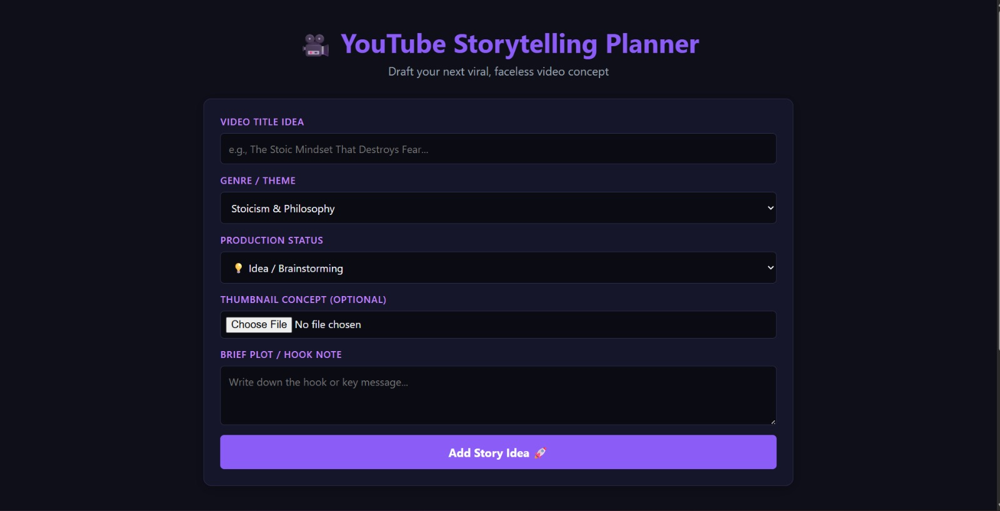
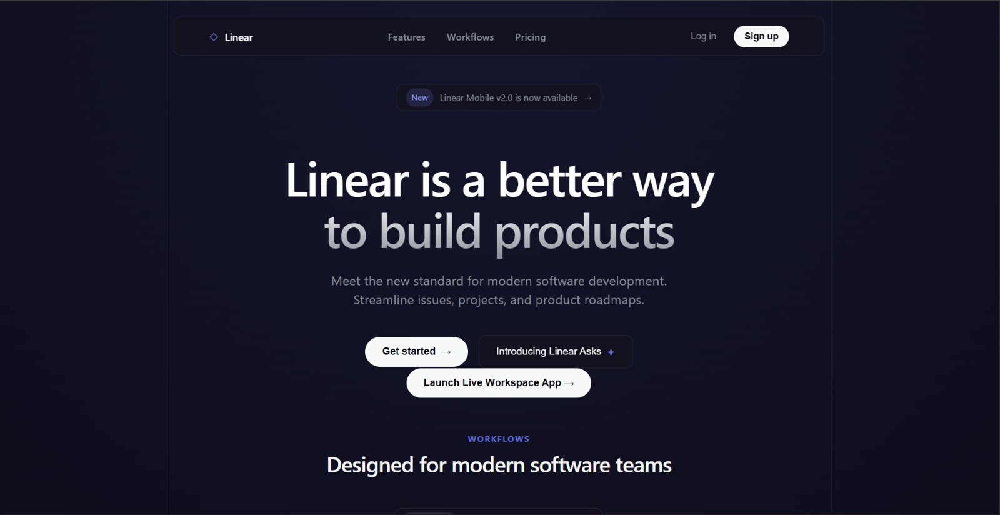

Building functional, clean, and interactive web experiences.
Passionate about full-stack engineering, clean UI design, and user-centric web applications.
Featured Projects
A selection of web apps and clones built recently.

YouTube Storytelling Planner
A persistent web app for creators to organize, filter, and track video concepts using local storage.

Dev Analytics Dashboard
A responsive analytics dashboard tracking activity trends, performance metrics, and project stats.

Linear Issue Tracker Clone
A modern task management board with streamlined issue tracking and modern UI design.
Bootcamps & Certifications
Verified completion certificates and technical training.
React JS Bootcamp
Frontend Web Development & Component Architecture
Backend with Node & Express
Server-Side Development, REST APIs, & Routing
Python & Artificial Intelligence
Python Scripting, AI Concepts & Fundamentals
Let's Connect
Interested in collaborating or discussing opportunities? Send me a direct message!